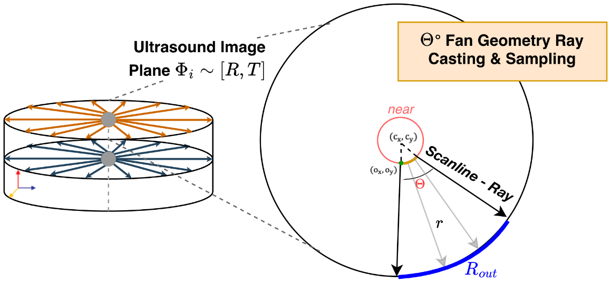
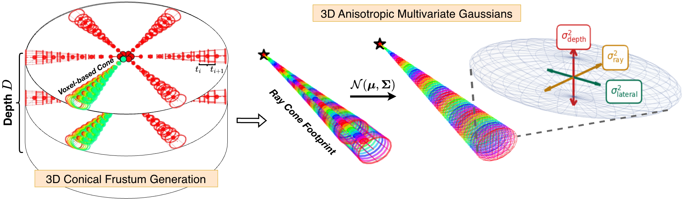
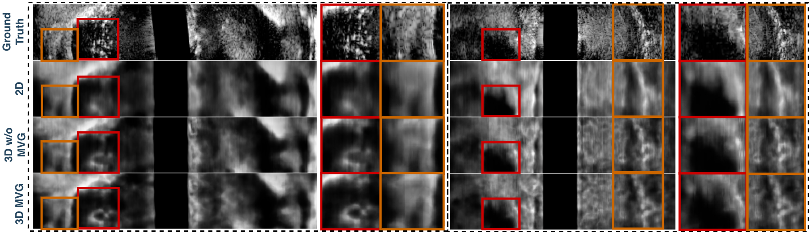
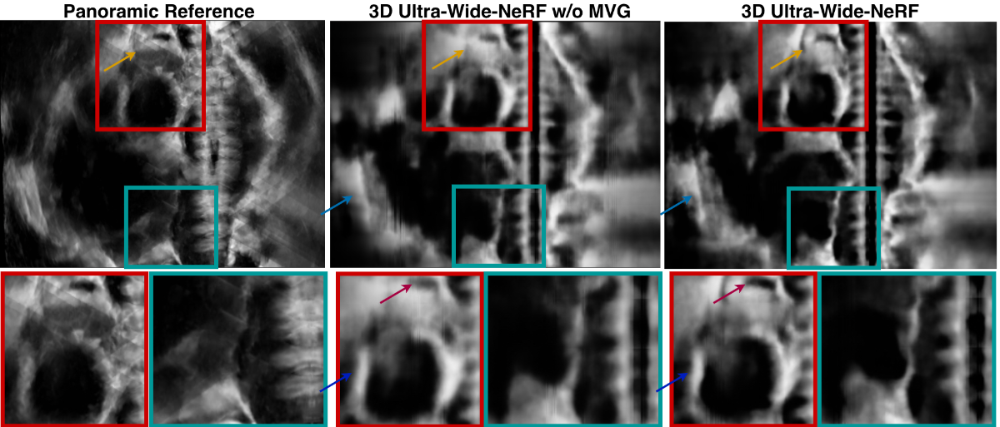
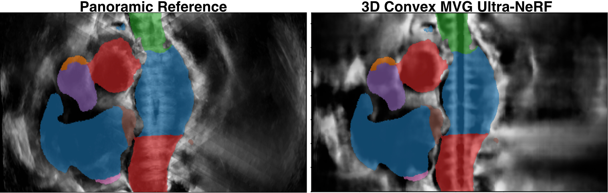
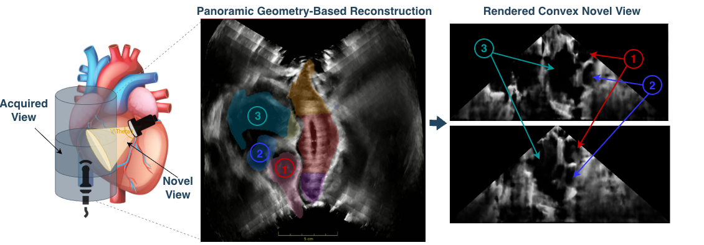

Multivariate Gaussian NeRF for Wide Field-of-View Ultrasound Reconstruction
1CAMP, Technical University of Munich 2Munich Center for Machine Learning 3LUMA Vision, Dublin
* Equal contribution
Wide Field-of-View (WFoV) reconstruction enhances 3D ultrasound imaging by providing valuable anatomical context for segmentation models and visualization. Clinical ultrasound volumes are predominantly acquired using convex probes, which generate expanding, diverging acoustic beams to maximize anatomical coverage. Stitching these sweeps together traditionally introduces significant compounding artifacts and aliasing due to depth-dependent resolution changes. Here, we introduce Ultra-Wide-NeRF, a Multivariate 3D Gaussian (MVG) NeRF-based method for WFoV ultrasound reconstruction. By explicitly modeling the complex beam geometry using distance-dependent convex volumetric sampling and anisotropic 3D Gaussians, our method inherently mitigates these compounding artifacts and provides anti-aliasing. Beyond simply reconstructing a static 3D grid, our NeRF-based approach yields a continuous neural representation of the tissue, enabling the synthesis of high-fidelity novel views from arbitrary virtual trajectories. We validate Ultra-Wide-NeRF for intracardiac echocardiography on phantom and porcine datasets, demonstrating that our method expands the spatial context important in intraoperative navigation.
Convex Probe Geometry. We model each ultrasound image as a fan of scanlines between an inner and an outer radius, with an opening angle of up to 360°, as in a rotating ICE probe. In 3D, one training sample is a stack of fan slices, each with its own pose.
Cone Tracing with Multivariate Gaussians. Every scanline is cast as a cone, and each cone segment is approximated by a Gaussian 𝒩(μ, Σ). The covariance has separate variances along the ray, laterally and in elevation, matching the three resolution axes of ultrasound. We encode the Gaussians with integrated positional encoding, following mip-NeRF.
Physics-based Rendering. Instead of colour and density, the network predicts attenuation, reflection and scattering amplitude per Gaussian. As in Ultra-NeRF, these maps are combined along each ray into B-mode intensity, using the energy that remains after attenuation and reflection.


The fused volume can be rendered in 3D and cut along any plane. The video shows the reconstruction and its sagittal and coronal cuts with anatomical labels overlaid.
We train on N subvolumes, subsampled in depth, and render subvolumes that were never seen during training at full resolution. We compare against Ultra-NeRF with point sampling, trained on single 2D fan slices and on 3D stacks. Ultra-Wide-NeRF suppresses aliasing and lowers blurriness.

We render sparse sweeps as one continuous panorama along a trajectory and compare it with the full geometry-based compounding. The stitching artifacts are visible in the compounding result.

We overlay the same anatomical labels on the panoramic reference and on the Ultra-Wide-NeRF reconstruction of the porcine data. The labelled structures line up with the reconstructed anatomy, so fusing the sweeps into one neural field preserves the geometry of the heart.

Because the representation is continuous, we can query it at probe poses that were never acquired, including views off the catheter trajectory.

Training, evaluation, panoramic trajectory computation and depth-subsampled rendering are available on GitHub under the Apache 2.0 license. The phantom and porcine data cannot be shared; the repository documents the expected data format.
git clone https://github.com/patrisvalera/ultra-wide-nerf.git
cd ultra-wide-nerf
conda create -n ultra_wide_nerf python=3.11 && conda activate ultra_wide_nerf
pip install -r requirements.txt
python run_ultranerf.py --config configs/config_convex.txt --datadir data/my_dataset@article{valera2026ultrawidenerf,
title = {Multivariate Gaussian NeRF for Wide Field-of-View Ultrasound Reconstruction},
author = {Valera, Patris and Wysocki, Magdalena and Duelmer, Felix and Azampour, Mohammad Farid and Herz, Sebastian and W{\"o}rz, Stefan and Navab, Nassir},
journal = {arXiv preprint arXiv:2604.24187},
year = {2026}
}This work builds on Ultra-NeRF and the integrated positional encoding of mip-NeRF. We thank the Interdisciplinary Research Laboratory of CAMP and LUMA Vision.